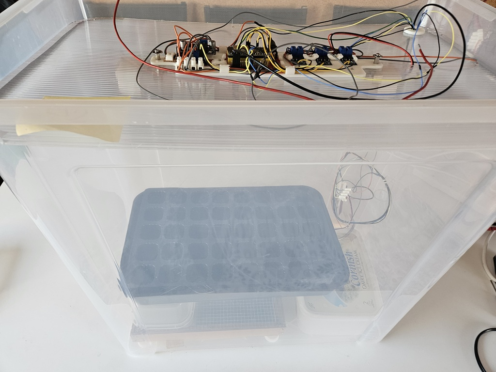
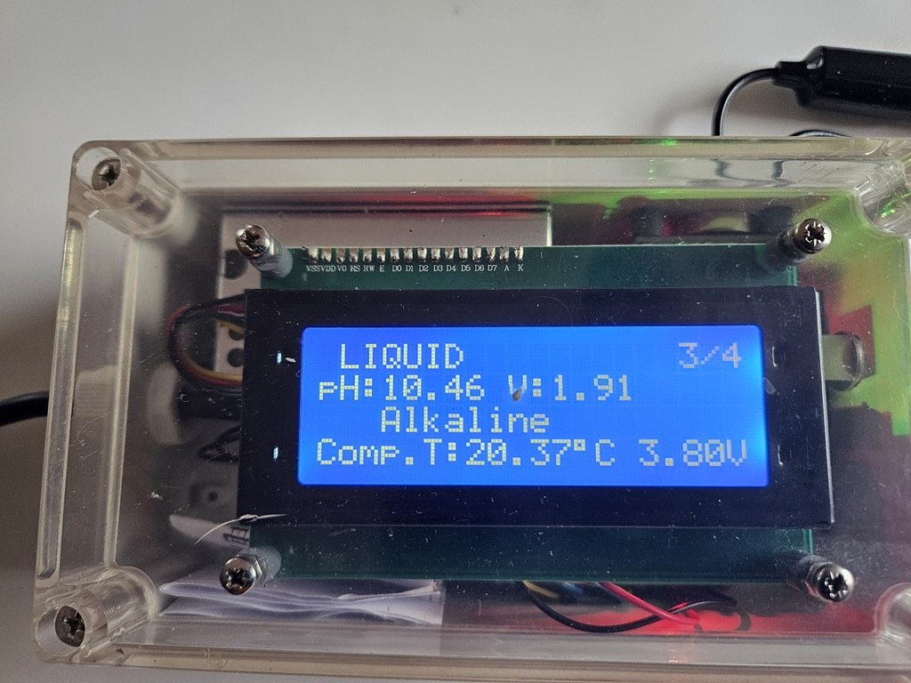
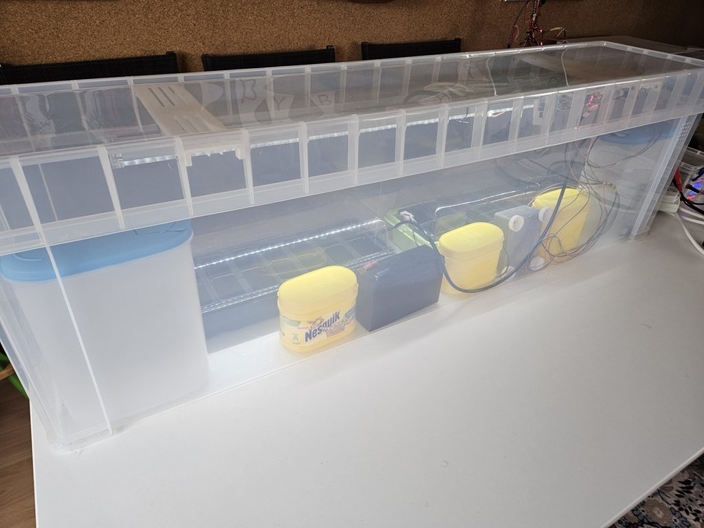
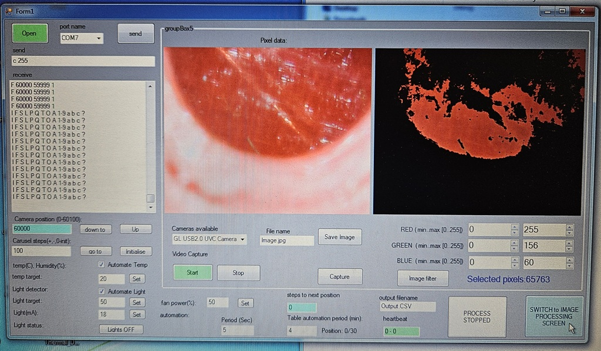
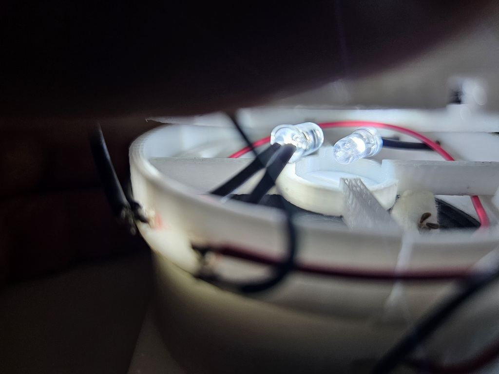
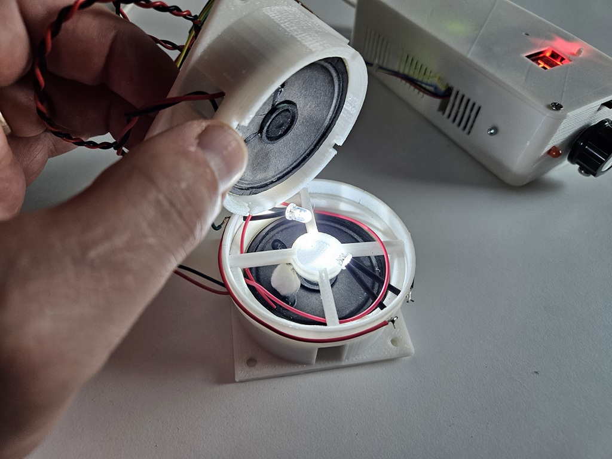

A modular research platform combining environmental control, programmable physical stimulation, machine vision, automated microscopy, embedded electronics, remote monitoring and quantitative data analysis for advanced biological research.
Aurelia BioSystems develops modular experimental platforms capable of investigating biological response under precisely controlled environmental and physical conditions.
Our systems combine embedded control, machine vision, automated imaging and quantitative analysis to accelerate experimental research.

Our self contained pots with high volume 80litres and hight of 50cm

Paralel experimentation is possible using separate beds for the samples

All electronical components are well protected in double lid configuration

Optical stage for monitoring specific areas of interes while the sample is under electrical field.

Automatic control for contineous conditioning of samples while the vision system is segmenting and capturing samples.

Independednt monitor of the environment (liquid and air quiality). Uses gas sensors, thermometer with humidity sensor, pH meter plus sealed temperature sensor for liquid.

Many samples are extremely sensitive to atmospheric environemnt as well as the supply water quality

Our flat self-contained pot has additional independednt power supply and 50 independent beds for experimentation

All nutrients and water are included inside. The control systems with all sensors is also embedded in the pot. WIFI control allows remote monitoring of the parameters.

All pots and systems are controlled by 12V (directly or from battery pack). For this purpose we needed stable power supply allowing to monitor consumption. Solar panels are also contributing towards reduction in the electricity consumption. This also protects any running experiment in the events of power cut.

Optica stage for parallel experimentation with light wavelenth and intensity during seed germination.

The control system of the optical stage allows monitoring of the statistical data extracted directly from the image processing calculations.

Small platform for experimentation with electromagnetic field and sound during seed germination.

Specially designed pulse generator is used to produce different electromagnetic stimulus during germination.Seeds are sealed during the experiment.

Our small pot allows simplisity and affordsability during experimentation. While this does not have the complexity of the big pods, it features temperature and humidity sensors plus water pump and light sorce in small self-contained box - ideal for experiments which do not require complex systems.

This set up features specially designed peristaltic pump controller and recipient with contineous homogenic UV light.While the control sample is under visial light the test sample is moved to the UV jar for some time period and then back to standard pot. The effect of UV light is sampled over time.
The platform combines programmable environmental control with automated observation, allowing biological response to be measured objectively over time.
The current platform consists of independent experimental modules which can operate individually or be combined into larger automated research systems.
Independent regulation of temperature, humidity, lighting, liquid circulation and environmental conditions.
Microscope positioning, time-lapse recording, growth measurement, computer vision and image processing.
ESP32 based modules communicating over WiFi through a browser interface from anywhere.
Every experiment generates structured image and sensor datasets ready for advanced analytics and future AI-assisted research.
Electrical field, UV, Acoustic stimulation, Programmable illumination.
Every module has been designed as an independent subsystem that can be combined to create new experimental configurations.
Every subsystem has been developed in-house. Control systems. Electromechanics. Industrial software. IoT. Optical instrumentation. AI-ready architecture. This integrated approach allows new biological experiments to be designed, built and tested without relying on commercial laboratory platforms.
Our StoryWe welcome collaboration with universities, biotechnology companies, research institutes and industrial innovators interested in controlled biological experimentation.
Contact UsIndependent regulation of temperature, humidity, lighting, liquid circulation and environmental conditions.
Autonomous environmental chambers providing precise control of temperature, humidity, lighting and nutrient circulation.
Stable environmental chamber for controlled germination, conditioning and repeatable biological experiments.
Independent regulation of temperature, humidity, lighting, liquid circulation and environmental conditions.
Controlled acoustic stimulation for investigating the influence of frequency and sound pressure on biological development.
Independent regulation of temperature, humidity, lighting, liquid circulation and environmental conditions.
Controlled ultraviolet illumination for photobiology, fluorescence and optical response investigations.
Real-time browser-based monitoring of environmental conditions, equipment status and experiment progress.
We welcome opportunities in laboratory automation, research instrumentation, prototype development and European collaborative research projects.